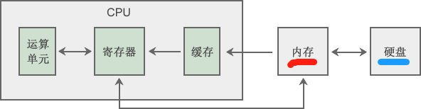
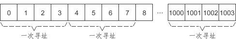

【本文结构】
- 0、摘要
- 1、CPU和程序运行
- 2、虚拟内存：C语言中看到的地址都是假的
- 3、虚拟地址空间以及编译模式
- 4、C语言内存对齐 —— 提高寻址效率
- 5、内存分页机制 —— 完成虚拟地址的映射
- 6、内存管理单元MMU
- 程序是在内存中运行的，一名合格的程序员必须了解内存，学习C语言是了解内存布局的最简单、最直接、最有效的途径，C语言简直是为内存而生的，它比任何一门编程语言都贴近内存。本专题将为你解开以下谜团：
- C语言中使用的地址为什么是假的，计算机又是如何通过假的地址访问到真实的物理内存的？
- 一个C语言程序在内存中是如何分布的？函数放在哪里？变量放在哪里？字符串放在哪里？
- 为什么全局变量在整个程序中都可以使用，而局部变量只能在函数内部使用？
- 一个C语言程序可以使用多大的内存？
- 操作系统和用户程序之间是如何协作的？
- 堆和栈都是什么，它们在程序运行过程中起到什么作用？为什么栈内存的分配效率要高于堆？
- 栈溢出是怎么回事，如何利用栈溢出进行攻击？
- 内存泄漏、野指针、非法内存访问、段错误都是怎么产生的？
- 内存池、线程池、连接池等这些莫名其妙的“池子”是怎么回事？
- CPU的结构简介
- 程序（包括指令和数据） 是保存在硬盘中的，要载入内存才能运行，CPU也被设计为只能从内存中读取数据和指令。
- 对于CPU来说，内存仅仅是一个存放指令和数据的地方，并不能在内存中完成计算功能， 都必须读取到CPU内部才能进行。

- 运算单元是CPU的大脑，负责加减乘除、比较、位移等运算工作，每种运算都有对应的电路支持，速度很快。
- 寄存器（Register）是CPU内部非常小、非常快速的存储部件，它的容量很有限，对于32位的CPU，每个寄存器一般能存储32位（4个字节）的数据，对于64位的CPU，每个寄存器一般能存储64位（8个字节）的数据。
- 我们经常听说多少位的CPU，指的就是寄存器的的位数。（也可以理解为数据总线的宽度，通常情况下它们是相等的）
- 寄存器在程序的执行过程中至关重要，不可或缺，它们可以用来完成数学运算、控制循环次数、控制程序的执行流程、标记CPU运行状态等。
- EIP（Extern Instruction Pointer ）寄存器的值是下一条指令的地址，CPU执行完当前指令后，会根据 EIP 的值找到下一条指令，改变 EIP 的值，就会改变程序的执行流程；
- CR3 寄存器保存着当前进程页目录的物理地址，切换进程就会改变 CR3 的值；
- EBP、ESP 寄存器用来指向栈的底部和顶部，函数调用会改变 EBP 和 ESP 的值。
- 缓存： 在CPU内部为什么又要设置缓存呢？虽然内存的读取速度已经很快了，但是和CPU比起来，还是有很大差距的，不是一个数量级的，如果每次都从内存中读取数据，会严重拖慢CPU的运行速度，CPU经常处于等待状态，无事可做。在CPU内部设置一个缓存，可以将使用频繁的数据暂时读取到缓存，需要同一地址上的数据时，就不用大老远地再去访问内存，直接从缓存中读取即可。
- 缓存的命中率： 缓存的容量是有限的，CPU只能从缓存中读取到部分数据，对于使用不是很频繁的数据，会绕过缓存，直接到内存中读取。所以不是每次都能从缓存中得到数据，这就是缓存的命中率，能够从缓存中读取就命中，否则就没命中。关于缓存的命中率又是一门学问，哪些数据保留在缓存，哪些数据不保留，都有复杂的算法。
- 大家在购买CPU时，也会经常关心缓存容量，例如 Intel Core i7 3770K 的三级缓存为 8MB，二级缓存为 256KB，一级缓存为 32KB。缓存容量越大，CPU越强悍。
- CPU指令
- CPU指令集（Instruction Set）： 要想让CPU工作，必须借助特定的指令，例如 add 用于加法运算，sub 用于除法运算，cmp 用于比较两个数的大小，这称为CPU的指令集。
- 我们的C语言代码最终也会编译成一条一条的CPU指令。
- 不同型号的CPU支持的指令集会有所差异，但绝大部分是相同的。
- 本节的重点是让大家认识寄存器这个小而快速的存储部件，它在程序运行过程中起着至关重要的作用，CPU就是用它来记录程序的运行状态，然后根据它的值再决定下一步的操作。
- 虚拟地址
- 代码中的全局变量，它们的内存地址在链接时就已经决定了，以后再也不能改变，该程序无论在何时运行，结果都是一样的。 那么问题来了，如果物理内存中的这两个地址被其他程序占用了怎么办，我们的程序岂不是无法运行了？幸运的是，链接后决定的内存地址都是假的，不是真实的物理内存地址，而是虚拟地址。虚拟地址通过CPU的转换才能对应到物理地址，而且每次程序运行时，操作系统都会重新安排虚拟地址和物理地址的对应关系，哪一段物理内存空闲就使用哪一段。
- 虚拟地址的思维是这样的：把程序给出的地址看做是一种虚拟地址（Virtual Address），然后通过某些映射的方法（内存映射机制），将这个虚拟地址转换成实际的物理地址。这样，只要我们能够妥善地控制这个虚拟地址到物理地址的映射过程，就可以保证程序每次运行时都可以使用相同的地址。如下图所示：

- 使用虚拟地址的好处：
- 在编程时可以使用固定的内存地址；
- 使不同程序的地址空间相互隔离；
- 提高内存使用效率。
使不同程序的地址空间相互隔离
- 如果所有程序都直接使用物理内存，那么程序所使用的地址空间不是相互隔离的。
- 恶意程序可以很容易改写其他程序的内存数据，以达到破坏的目的；
- 有些非恶意、但是有 Bug 的程序也可能会不小心修改其他程序的数据，导致其他程序崩溃。
- 这对于需要安全稳定的计算机环境的用户来说是不能容忍的，用户希望他在使用计算机的时候，其中一个任务失败了，至少不会影响其他任务。
- 使用了虚拟地址后，程序A和程序B虽然都可以访问同一个地址，但它们对应的物理地址是不同的，无论如何操作，都不会修改对方的内存。
提高内存使用效率
- 使用虚拟地址后，操作系统会更多地介入到内存管理工作中，这使得控制内存权限成为可能。例如，我们希望
- 保存数据的内存没有执行权限，
- 保存代码的内存没有修改权限，
- 操作系统占用的内存普通程序没有读取权限等。
- 另外，当物理内存不足时，操作系统能够更加灵活地控制换入换出的粒度，磁盘 I/O 是非常耗时的工作，这能够从很大程度上提高程序性能。
- 中间层思想
- 在计算机中，为了让操作更直观、易于理解、增强用户体验，开发者经常会使用一件法宝——增加中间层，即使用一种间接的方式来屏蔽复杂的底层细节，只给用户提供简单的接口。虚拟地址是使用中间层的一个典型例子。
- 实际上，计算机的整个发展过程就是不断引入新的中间层：
- 计算机的早期，程序都是直接运行在硬件之上，自己负责硬件的管理工作；程序员也使用二进制进行编程，需要处理各种边界条件和安全问题。
- 后来人们不能忍受了，于是开发出了操作系统，让它来管理各种硬件，同时发明了汇编语言，减轻程序员的负担。
- 随着软件规模的不断增大，使用汇编语言编程开始变得捉襟见肘，不仅学习成本高，开发效率也很低，于是C语言诞生了。C语言编译器先将C代码翻译为汇编代码，再由汇编器将汇编代码翻译成机器指令。
- 随着计算机的发展，硬件越来越强大，软件越来越复杂，人们又不满足于使用C语言了，于是 C++、Java、C#、PHP 等现代化的编程语言诞生了。
- 虚拟地址空间 就是程序可以使用的虚拟地址的有效范围。
- 虚拟地址和物理地址的映射关系由操作系统决定，
- 相应地，虚拟地址空间的大小也由：
- 操作系统决定，
- 但还会受到编译模式的影响。
- CPU的数据处理能力 （—— 物理内存）
- CPU是计算机的核心，决定了计算机的数据处理能力和寻址能力，也即决定了计算机的性能。
- CPU一次（一个时钟内）能处理的数据的大小由寄存器的位数和数据总线的宽度（也即有多少根数据总线）决定，我们通常所说的多少位的CPU，除了可以理解为寄存器的位数，也可以理解数据总线的宽度，通常情况下它们是相等的。
- 数据总线和主频都是CPU的重要指标：数据总线决定了CPU单次的数据处理能力，主频决定了CPU单位时间内的数据处理次数，它们的乘积就是CPU单位时间内的数据处理量。
- 数据总线和地址总线不是一回事，数据总线用于在CPU和内存之间传输数据，地址总线用于在内存上定位数据，它们之间没有必然的联系，宽度并不一定相等。实际情况是，地址总线的宽度往往随着数据总线的宽度而增长，以访问更大的内存。
- 16位CPU
- 早期的CPU是16位的，一次能处理 16Bit（2个字节）的数据。
- 典型的16位处理器是 Intel 8086，它的数据总线有16根，地址总线有20根，寻址能力为 2^20 = 1MB。
- 32位CPU
- 随着计算机产业的进步，出现了32位的CPU，一次能处理 32Bit（4个字节）的数据。
- 这个时候就提出了虚拟地址的概念，并被应用到CPU和操作系统中，由它们共同完成虚拟地址和物理地址的映射，这使得程序编写更加容易，运行更加安全。
- 典型的32位处理器是
- Intel 的 80386 ：80386 的数据总线和地址总线宽度都是32位，寻址能力达4GB；
- Intel Pentium 4（奔腾4）：Pentium 4的地址总线宽度是36位，理论寻址能力达64GB。
- 64位CPU
- 现代计算机都使用64位的CPU，它们一次能处理64Bit（8个字节）的数据。
- 典型的64位处理器是 Intel 的 Core i3、i5、i7 等，它们的地址总线宽度为 40~50 位左右。
- 实际支持的物理内存
- CPU支持的物理内存只是理论上的数据，实际应用中还会受到操作系统的限制，例如，
- Win7 64位家庭版最大仅支持8GB或16GB的物理内存，
- Win7 64位专业版或企业版能够支持到192GB的物理内存。
- Windows Server 2003 数据中心版专为大型企业或国家机构而设计，可以处理海量数据，分为32位版和64位版，32位版最高支持512GB的物理内存，这显然超出了32位CPU的寻址能力，可以通过两次寻址来实现。
- 编译模式
- 为了兼容不同的平台，现代编译器大都提供两种编译模式：
- 32位模式
- 64位模式
- 32位编译模式
- 在32位模式下，一个指针或地址占用4个字节的内存，共有32位，理论上能够访问的虚拟内存空间大小为 2^32 = 0X100000000 Bytes，即4GB，有效虚拟地址范围是 0 ~ 0XFFFFFFFF。
- 也就是说，对于32位的编译模式，不管实际物理内存有多大，程序能够访问的有效虚拟地址空间的范围就是0 ~ 0XFFFFFFFF，也即虚拟地址空间的大小是 4GB。
- 换句话说，程序能够使用的最大内存为 4GB，跟物理内存没有关系。
- 注意：虚拟内存、物理内存、磁盘（硬盘）是三个不同的概念。
- 如果程序需要的内存大于物理内存（物理内存小于4GB），或者内存中剩余的空间不足以容纳当前程序，那么操作系统会将内存中暂时用不到的一部分数据写入到磁盘，等需要的时候再读取回来。 而我们的程序只管使用 4GB 的内存，不用关心硬件资源够不够。
- 如果物理内存大于 4GB，例如目前很多PC机都配备了8GB的内存，那么程序也无能为力，它只能够使用其中的 4GB。
- “操作系统会将内存中暂时用不到的一部分数据写入到磁盘” 是指：操作系统会在磁盘上分配一部分空间作为虚拟内存来存储这部分数据。
- 硬盘的读写速度比内存慢很多，反复交换数据会消耗很多时间，所以如果你的内存太小，会严重影响计算机的运行速度，甚至会出现”卡死“现象，即使CPU强劲，也不会有大的改观。
- 64位编译模式
- 在64位编译模式下，一个指针或地址占用8个字节的内存，共有64位，理论上能够访问的虚拟内存空间大小为 2^64。
- 这是一个很大的值，几乎是无限的，就目前的技术来讲，不但物理内存不可能达到这么大，CPU的寻址能力也没有这么大，实现64位长的虚拟地址只会增加系统的复杂度和地址转换的成本，带不来任何好处。
- 所以 Windows 和 Linux 都对虚拟地址进行了限制，仅使用虚拟地址的低48位（6个字节），总的虚拟地址空间大小为 2^48 = 256TB。
- 注意：
- 32位的操作系统只能运行32位的程序（也即以32位模式编译的程序），
- 64位操作系统可以同时运行32位的程序（为了向前兼容，保留已有的大量的32位应用程序）和64位的程序（也即以64位模式编译的程序）。
- 64位的CPU运行64位的程序才能发挥它的最大性能，运行32位的程序会白白浪费一部分资源。
- 目前计算机可以说已经进入了64位的时代，之所以还要提供32位编译模式，是为了兼容一些老的硬件平台和操作系统，或者某些场合下32位的环境已经足够，使用64位环境会增大成本，例如嵌入式系统、单片机、工控等。
- 这里所说的32位环境是指：32位的CPU + 32位的操作系统 + 32位的程序。
- 在 VS2015 中开启64位编译模式（略）
- 寻址步长
- 计算机内存是以字节（Byte）为单位划分的，理论上CPU可以访问任意编号的字节，但实际情况并非如此。
- CPU 通过地址总线来访问内存，一次能处理几个字节的数据，就命令地址总线读取几个字节的数据。 这样做可以以最快的速度寻址：不遗漏一个字节，也不重复对一个字节寻址。
- 32 位的 CPU 一次可以处理4个字节的数据，那么每次就从内存读取4个字节的数据；少了浪费主频，多了没有用。
- 64 位的 CPU 也是这个道理，每次读取8个字节。
- 以32位的CPU为例，实际寻址的步长为4个字节，也就是只对编号为 4 的倍数的内存寻址，例如 0、4、8、12、1000 等，而不会对编号为 1、3、11、1001 的内存寻址。如下图所示：

- 对于程序来说，一个变量最好位于一个寻址步长的范围内，这样一次就可以读取到变量的值；如果跨步长存储，就需要读取两次，然后再拼接数据，效率显然降低了。
- 内存对齐： 将一个数据尽量放在一个步长之内，避免跨步长存储，这称为内存对齐。
- 32位编译模式下，默认以4字节对齐；
- 64位编译模式下，默认以8字节对齐。
- 为了提高存取效率，编译器会自动进行内存对齐。—— 代价是作为填充的内存会被浪费掉。
- 结构体的例子中：如果不考虑内存对齐，结构体变量 t 所占内存应该为 4+1+4 = 9 个字节。考虑到内存对齐，虽然成员 b 只占用1个字节，但它所在的寻址步长内还剩下 3 个字节的空间，放不下一个 int 型的变量了，所以要把成员 c 放到下一个寻址步长。剩下的这3个字节，作为内存填充浪费掉了。
- 普通变量的例子中： 可见它们的地址都是4的整数倍，并相互挨着。（定义了3个变量，2个 int 型，1个 char 型，并且 char 型在两个 int 中间定义）
- 经作者测试：
- 对于全局变量，GCC在 Debug 和 Release 模式下都会进行内存对齐，而VS只有在 Release 模式下才会进行对齐。
- 对于局部变量，GCC和VS都不会进行对齐，不管是Debug模式还是Release模式。
- 改变对齐方式
- 内存对齐虽然和硬件有关，但是决定对齐方式的是编译器，如果你的硬件是64位的，却以32位的方式编译，那么还是会按照4个字节对齐。
- 对齐方式可以通过编译器参数修改，以VS2010为例，更改对齐方式的步骤为：项目 --> 属性 --> C/C++ --> 代码生成 --> 结构成员对齐。
- 内存对齐不是C语言的特性，它属于计算机的运行原理，C++、Java、Python等其他编程语言同样也会有内存对齐的问题。
- 内存映射方式
- 以程序为单位对虚拟内存进行映射
- 即以整个程序为单位，把一段与程序运行所需要的同等大小的虚拟空间映射到某段（连续的）物理空间。
- 即一个程序所需的整个虚拟内存映射到物理内存的整段内存，也即程序所需的虚拟内存映射到到物理内存也是连续的。
- 地址隔离：很好地解决了不同程序地址不隔离的问题，同时也能够在
- 固定的内存地址：程序可以使用固定的内存地址， 不再需要重定位。
- 内存使用效率：换入换出粒度较大。 以程序为单位对虚拟内存进行映射时，如果物理内存不足，被换入换出到磁盘的是整个程序，这样势必会导致大量的磁盘读写操作，严重影响运行速度，所以这种方法还是显得粗糙，粒度比较大。
- 分页（Paging）的思想是指把地址空间人为地分成大小相等（并且固定）的若干份，这样的一份称为一页，就像一本书由很多页面组成，每个页面的大小相等。如此，就能够以页为单位对内存进行换入换出：
- 当程序运行时，只需要将必要的数据从磁盘读取到内存，暂时用不到的数据先留在磁盘中，什么时候用到什么时候读取。
- 当物理内存不足时，只需要将原来程序的部分数据写入磁盘，腾出足够的空间即可，不用把整个程序都写入磁盘。
- 现代计算机都使用 分页 的方式对虚拟地址空间和物理地址空间进行分割和映射，程序虚拟内存可以分散在不连续的物理页，以减小换入换出的粒度，提高程序运行效率。
- 页的大小
- 页的大小是固定的，由硬件决定，或硬件支持多种大小的页，操作系统选择来决定页的大小。
- 比如 Intel Pentium 系列处理器支持 4KB 或 4MB 的页大小，那么操作系统可以选择每页大小为 4KB，也可以选择每页大小为 4MB，但是在同一时刻只能选择一种大小，所以对整个系统来说，也就是固定大小的。
- 目前几乎所有PC上的操作系统都是用 4KB 大小的页。
- 假设我们使用的PC机是32位的，那么：
- 虚拟地址空间总共有 4GB，按照 4KB 每页分的话，总共有 2^32 / 2^12 = 2^20 = 1M = 1048576 个页；
- 物理内存也是同样的分法。
- 我们把虚拟空间的页叫做虚拟页（VP，Virtual Page），
- 把物理内存中的页叫做物理页（PP，Physical Page），
- 把磁盘中的页叫做磁盘页（DP，Disk Page）。
- 页错误（Page Fault）：当（程序）进程需要用到的虚拟页在物理页中找不到时（没有被从磁盘读取到内存中）， 硬件会捕获到这个消息，就是所谓的页错误，然后操作系统接管进程，负责将 这些虚拟页从磁盘中读取出来并且装入内存中的相应物理页，然后将内存中的物理页与这些虚拟页之间建立映射关系。
- 分页机制的实现
- 直接使用数组转换：每个数组元素保存一个物理地址，而把虚拟地址作为数组下标，这样就能够很容易地完成映射，并且效率不低。（相当于下面提到的页表机制的每个地址就是一张表）
- 对于大小为 4GB（2^32）的虚拟地址空间， 这样的数组有 2^32 个元素，每个元素大小为4个字节，总共需要16GB的内存来存储这个数组，显然是不现实的！

- 通过页表转换
- 现代操作系统都使用分页机制来管理内存，这使得每个程序都拥有自己的地址空间。每当程序使用虚拟地址进行读写时，都必须转换为实际的物理地址，才能真正在内存条上定位数据。内存地址的转换是通过一种叫做页表的机制来完成的。如下图所示：

- 一级页表
- 物理地址 = 页 + 页内偏移
- 2^12 为一个页的大小，也就是4K。
- 虚拟地址空间大小为 4GB，总共包含 2^32 / 2^12 = 2^20 = 1K * 1K = 1M = 1048576 个页面，
- 我们可以定义一个这样的数组：它包含 2^20 = 1M 个元素， 每个元素的值为物理页的编号（也就是位于物理内存第几个页面），长度为4字节，
- 整个数组共占用4MB的内存空间。 这样的数组称为页表（Page Table），它记录了地址空间中所有页的编号。
- 存储这 1M 个页面的页表数组实打实地占用了连续 4M 的物理内存空间，对应连续的 1K 个物理页。
- 虚拟地址长度为32位，（与CPU内存和地址总线有关？）
- 因为页表数组共有 2^20 = 1M 个元素，使用虚拟地址的高20位作为数组下标（表示虚拟页的编号），正好能够访问数组中的所有元素；
- 并且，一个页面的大小为 2^12 = 4KB，使用虚拟地址的低12位恰好能够表示在页内的偏移。

- 页表数组的每个元素的长度却为 4 字节，即 32 位
- 高20位表示物理页的编号；
- 低12位表示当前页（虚拟页？）的相关属性，例如是否有读写权限、是否已经分配物理内存、是否被换出到硬盘等。
- 这种思路所形成的映射关系如下图所示：
- 可以发现，有的页被映射到物理内存，有的被映射到硬盘，不同的映射方式可以由页表数组元素的低12位来控制。
- 使用这种方案，不管程序占用多大的内存，都要为页表数组分配4M的内存空间（页表数组也必须放在物理内存中），因为虚拟地址空间中的高1G或2G是被系统占用的，必须保证较大的数组下标有效。
- 现在硬件很便宜了，内存容量大了，很多电脑都配备4G或8G的内存，页表数组占用4M内存或许不觉得多，但在32位系统刚刚发布的时候，内存还是很紧缺的资源，很多电脑才配备100M甚至几十兆的内存，4M内存就显得有点大了。
- 对于4G（2^32B）的内存，每页的大小为 4KB（2^12B）, 则需要页表数组的长度为 1M（2^20）个元素，每个元素占用 4B，则一共需要 4MB 的物理内存。也即需要连续的 1K（2^10）个物理页来存储。
- 关于连续：而我们当初使用页表，就是为了可以将进程划分为一个个页面并存储到不用连续的物理内存页中，但此时页表就需要1024个连续的物理页，这就和当时的目标背道而驰了。此外，根据局部性原理可知，很多时候，进程在一段时间内只需要访问某几个页面就可以正常运行了。因此也没有必要让整个页面都常驻内存。
- 关于内存：4M的内存来存储页表，确实很大，我们需要使页表占用的内存更小！
- 两级页表
- 上面一级页表的介绍在最后提到了它两个不足的地方。解决方案：可以将长长的页表进行分组，使每个页面中刚好可以放下一个分组（如上面的例子中，页面的大小为4KB，页表数组的元素个数为 1M 个，数组元素的字节数为 4B），这样每个页面中可以存放 1K（1024）个页表数组元素，再将各个这样的组离散地放在各个物理页中（总共需要 1K 个页面）。这样就需要为离散的页表再建立一张页表，称为页目录（Page Directory）/外层页表/顶层页表。
- 上述解决解决方案，就是两级页表。
- 按照解决方案中提到的分组方法， 需要将虚拟地址分割为三分部，高10位作为页目录中元素的下标，中间10位作为页表中元素的下标，最后12位作为页内偏移。


- 这种思路所形成的映射关系如下图所示：

- 使用两级页表后，页表占用的内存空间不固定，它和程序本身占用的内存空间成正比，从整体上来看，会比使用一级页表占用的内存少得多。
- 两级页表的一个明显优点是，虽然无论程序占用的内存多大，页目录会一直占据掉4K的内存，但对于占用的内存较少的程序，分散的页表的个数就会远远少于 1K（2^10）个，这样就只会占用很少的一部分存储空间（远远小于4M）。 在极少数的情况下，程序占用的内存非常大，布满了4G的虚拟地址空间，这样页表的数量可能接近甚至等于1K（2^10）个，再加上页目录占用的存储空间，总共是 4MB+4KB，比上面使用一级页表的方案仅仅多出4KB的内存。
- 而对一级页来说，无论程序占用的内存多大，都永远需要 4M 的内存来存放页表数组。
- 同时，两级页表虽然解决了页表（数组）需要连续存储的问题。（但是同时也增加了内存的访问次数）
- 多级页表
- 对于64位环境，虚拟地址空间达到 256TB，使用二级页表占用的存储空间依然不小，所以会更加细化，从而使用三级页表甚至多级页表，这样就会有多个页目录，虚拟地址也会被分割成多个部分，思路和上面是一样的，不再赘述。
- 若采用多级页表机制，则各级页表的大小不能超过一个页面。
- 内存管理单元
- 通过页表完成虚拟地址和物理地址的映射时，要经过多次转换，还要进行计算，如果由操作系统来完成这项工作，那将会成倍降低程序的性能，得不偿失，所以这种方式是不现实的。在CPU内部，有一个部件叫做MMU（Memory Management Unit，内存管理单元），由它来负责将虚拟地址映射为物理地址，如下图所示：

- 在页映射模式下，CPU 发出的是虚拟地址，也就是我们在程序中看到的地址，这个地址会先交给 MMU，经过 MMU 转换以后才能变成了物理地址。
- 即便是这样，MMU也要访问好几次内存，性能依然堪忧，所以在MMU内部又增加了一个缓存，专门用来存储页目录和页表。
- MMU内部的缓存有限，当页表过大时，也只能将部分常用页表加载到缓存，但这已经足够了，经过算法的巧妙设计，可以将缓存的命中率提高到 90%，剩下的10%的情况无法命中，再去物理内存中加载页表。
- MMU 只是通过页表来完成虚拟地址到物理地址的映射，但不会构建页表，构建页表是操作系统的任务。
- 在程序加载到内存以及程序运行过程中，操作系统会不断更新程序对应的页表，并将页目录的物理地址保存到 CR3 寄存器。MMU 向缓存中加载页表时，会根据 CR3 寄存器找到页目录，再找到页表，最终通过软件和硬件的结合来完成内存映射。
- CR3 是CPU内部的一个寄存器，专门用来保存页目录的物理地址。
- 每个程序在运行时都有自己的一套页表，切换程序时，只要改变 CR3 寄存器的值就能够切换到对应的页表。
- 内存权限的控制
- MMU 除了能够完成虚拟地址到物理地址的映射，还能够对内存权限进行控制。
- 在页表数组中，每个元素占用4个字节，也即32位，我们使用高20位来表示物理页编号，还剩下低12位，这12位就用来对内存进行控制，例如，是映射到物理内存还是映射到磁盘，程序有没有访问权限，当前页面有没有执行权限等。
- 操作系统在构建页表时将内存权限定义好，当MMU对虚拟地址进行映射时，首先检查低12位，看当前程序是否有权限使用，如果有，就完成映射，如果没有，就产生一个异常，并交给操作系统处理。操作系统在处理这种内存错误时一般比较粗暴，会直接终止程序的执行。